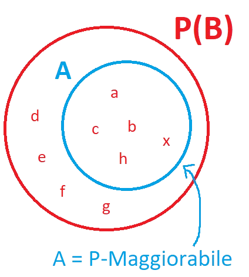

Modulo 3
Relazione¶
Definizione ― Relazione
Una Relazione fra due insiemi \(A\) e \(B\) è un qualunque sottoinsieme di \(A \times B\). $$ \begin{array}{c} A \mathcal{R} B \end{array} $$
Definizione ― Composizione di due Relazioni
\(\mathcal{R} \subseteq A \times B\) e \(\mathcal{S} \subseteq B \times C\) è la relazione \(\mathcal{R} \circ \mathcal{S}\) = \(\{(a,c) \in A \times C : \exists \text{ } b \in B \text{ tale che } a \mathcal{R} b \text{ e } b \mathcal{R} c\}\).
Relazioni Riflessive e Antiriflessive¶
Definizione ― Relazione Riflessiva
Diciamo che la Relazione \(\mathcal{R}\) su \(A \times A\) è riflessiva se ogni elemento di \(A\) è in relazione con se stesso. $$ \begin{array}{c} \forall a \in A, (a,a) \in \mathcal{R} \end{array} $$
Definizione ― Relazione Antiriflessiva
Diciamo che la Relazione \(\mathcal{R}\) su \(A \times A\) è antiriflessiva se ogni elemento di \(A\) non è in relazione con se stesso. $$ \begin{array}{c} \forall a \in A, (a,a) \not\in \mathcal{R} \end{array} $$
Esempio
- Antiriflessiva: nessun numero è minore di se stesso.
- Riflessiva: qualsiasi numero reale sottratto a se stesso ha come risultato \(0\), quindi un numero paro.
- Antiriflessiva: nessun numero è diverso da se stesso.
- né Riflessiva né Antiriflessiva: \(x + y = 5\) è vero solo quando \(x\) e \(y\) sono uguali a \(2.5\), in tutti gli altri casi è falso.
- né Riflessiva né Antiriflessiva: \(x \cdot y = 0\) è vero solo quando \((x,y) = 0\), in tutti gli altri casi è falso.
- sia Riflessiva che Antiriflessiva: l'unico caso in cui una Relazione è sia Riflessiva che Antiriflessiva.
- Riflessiva: qualsiasi numero reale sottratto a se stesso ha come risultato \(0\), quindi appartiene all'insieme \(\mathbb{Z}\).
- né Riflessiva né Antiriflessiva: \(x^2 + y^2 = 0\) è vero solo quando \((x,y) = 0\), in tutti gli altri casi è falso.
- Riflessiva: qualsiasi numero reale è uguale a se stesso.
- né Riflessiva né Antiriflessiva: \(x \cdot y > 0\) è falso solo quando \(x\) e \(y\) valgono \(0\), in qualsiasi altro caso è vero.
Relazioni Simmetriche e Antisimmetriche¶
Definizione ― Relazione Simmetrica
Una Relazione \(\mathcal{R}\) su \(A \times A\) è simmetrica se per ogni elemento \(a \text{ e } b \in A\), \(a \mathcal{R} b\) implica \(b \mathcal{R} a\).
Definizione ― Relazione Antisimmetrica
Diciamo che la Relazione \(\mathcal{R}\) su \(A \times A\) è antisimmetrica se per ogni \(a \text{ e } b \in A\), se \(a \mathcal{R} b\) e \(b \mathcal{R} a\), allora \(a = b\).
Esempio
- sia Simmetrica che Antisimmetrica.
- Antisimmetrica: se \(a \leq b\) e \(b \leq a\), allora necessariamente \(a = b\). Non può capitare che la condizione si verifichi e \(a \neq b\) (quindi non può essere Simmetrica).
- Antisimmetrica: perchè non troveremo mai coppie in cui \(a < b\) e \(b < a\), quindi la definizione di Antisimmetria viene rispettata.
- Simmetrica: se \(a + b = 10\) allora è sicuramente vero che \(b + a = 10\). Non è necessariamente vero che \(a = b\) (Antisimmetria) perchè possono esserci coppie come \(a=3, b=10\).
- Simmetrica: possono esserci coppie come \(a=2,b=4\) che rispettano la proprietà di Simmetria (\(2,4\) sono pari come \(4,2\)). Non può essere Antisimmetrica perchè non è detto che \(a = b\).
- né Simmetrica né Antisimmetrica: \(a \mathcal{R} b\) e \(b \mathcal{R} a\) non potrà mai essere vero, per esempio la coppia \((2,5) \in \mathcal{R}\) ma \((5,2) \not\in \mathcal{R}\).
- Simmetrica: perchè \((a,b) \in \mathcal{R}\) e \((b,a) \in \mathcal{R}\).
- né Simmetrica né Antisimmetrica: \((a,b) \in \mathcal{R}\) ma \((b,a) \not\in \mathcal{R}\).
- Simmetrica: \((a,b) \in \mathcal{R}\) e \((b,a) \in \mathcal{R}\).
- Antisimmetrica: non ci sono coppie \((a,b) \in \mathcal{R}\) e \((b,a) \in \mathcal{R}\).
Relazioni Transitive¶
Definizione ― Relazione Transitiva
Diciamo che la Relazione \(\mathcal{R}\) su \(A \times A\) è transitiva se per ogni \(a,b \text{ e } c \in A\), se \(a \mathcal{R} b\) e \(b \mathcal{R} c\), allora \(a \mathcal{R} c\).
Esempio
Chiusura¶
Definizione ― Chiusura
Un insieme \(B\) è detto chiusura di un insieme \(A\) rispetto ad una proprietà \(\mathcal{P}\) quando sono soddisfatte le seguenti condizioni:
- \(B\) gode della proprietà \(\mathcal{P}\), quindi \(\mathcal{P}(B)\)
- \(A \subseteq B\)
- per ogni insieme \(C\), se \(\mathcal{P}(C)\) e \(A \subseteq C\), allora \(B \subseteq C\)
Nell'esempio raffigurato:
- tutti gli elementi di \(B\) godono della proprietà \(\mathcal{P}\), quindi \(\mathcal{P}(B)\)
- l'insieme \(A\) è un sottoinsieme di \(B\)
- possiamo affermare che \(B \subseteq C\) perchè quest'ultimo gode della proprietà \(\mathcal{P}\) ed è superinsieme di \(A\).
Note aggiuntive
- La Chiusura di un insieme rispetto ad una proprietà, se esiste, è unica.
Dimostrazione dell'unicità della Chiusura¶
Supponiamo di avere \(B\) e \(B^\prime\) che sono entrambe chiusure di \(A\) rispetto a \(\mathcal{P}\).
Per le tre proprietà della Chiusura, possiamo dire che:
- esiste un insieme \(\mathcal{P}(B^\prime)\)
- \(A \subseteq B^\prime\)
- \(B\) è un superinsieme di \(B^\prime\), quindi \(B^\prime \subseteq B\).
Ora scambiando i due insiemi (\(B\) e \(B^\prime\)) otteniamo quanto segue:
- esiste un insieme \(\mathcal{P}(B)\)
- \(A \subseteq B\)
- \(B^\prime\) è un superinsieme di \(B\), quindi \(B \subseteq B^\prime\).
Si nota quindi che \(B^\prime \subseteq B\) e \(B \subseteq B^\prime\). Possiamo concludere che \(B = B^\prime\).
Preservazione della Transitività¶
Nel paragrafo che segue si va a dimostrare che l'operatore insiemistico di Intersezione preserva la Transitività di due Relazioni.
Supponiamo di avere due relazioni transitive, \(\mathcal{R}\) e \(\mathcal{S}\).
-
Se \((a,b),(b,c) \in \mathcal{R} \cap \mathcal{S}\), allora \((a,b),(b,c) \in \mathcal{R}\) e \((a,b),(b,c) \in \mathcal{S}\).
-
Visto che sono entrambe relazioni transitive:
- \((a,c) \in \mathcal{R}\)
- \((a,c) \in \mathcal{S}\)
- Quindi per definizione di Intersezione, \((a,c) \in \mathcal{R} \cap \mathcal{S}\).
Possiamo quindi confermare che l'Intersezione tra due relazioni transitive ne preserva la transitività.
Verifichiamo ora che lo stesso accada con l'operatore di Unione.
Supponiamo di avere due relazioni transitive: \(\mathcal{R}\) = essere più basso di, \(\mathcal{B}\) = essere antenato di.
Quindi l'unione \(\mathcal{R} \cup \mathcal{B}\) sarà formata dalle coppie in cui o \(x\) è antenato di \(y\) o \(x\) è più basso di \(y\).
- Pietro è antenato di Valerio, quindi troviamo la coppia (Pietro, Valerio) nell'Unione tra le due Relazioni.
- Valerio è più basso di Giuliana, quindi troviamo la coppia (Valerio, Giuliana) nell'Unione tra le due Relazioni.
- Pietro non è però più basso di Giuliana ne Giuliana è suo antenato. Quindi sicuramente non troveremo la coppia (Pietro, Giuliana) nell'Unione tra le due Relazioni.
- Secondo la Transitività però, se \(x\) è più basso di \(y\) (Giuliana è più basso di Pietro), allora \(x\) è sicuramente più basso di \(z\) (Giuliana è più bassa di Valerio).
Possiamo concludere quindi che l'Unione non preserva la Transitività di una Relazione.
P-Maggiorabile¶
Definizione ― P-Maggiorabile
Quando esiste un insieme \(B\) tale che \(\mathcal{P}(B)\) e \(A \subseteq B\), diciamo che \(A\) è P-Maggiorabile.
In altre parole, \(A\) è P-Maggiorabile quando rispetta le prime due proprietà della Chiusura.
